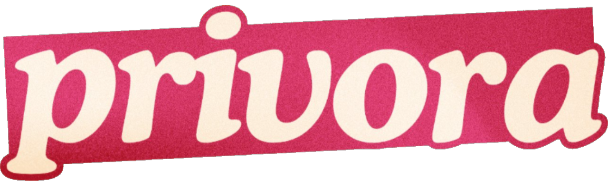

Welcome
to
Where Literacy Meets Security
ABOUT PRIVORA
A student-based advocacy aiming to enlighten the minds of the Filipino youth on data privacy driven problems through literate initiatives.
Privora is initiated by STEM students from 11-Leeuwenhoek of the Manila Science High School.
pri · vo · ra
noun
an advocacy project title that originated from the terms “privacy” and the informational website “quora”
where the youth can gain and share knowledge on data privacy and connect with people in valuing digital literacy